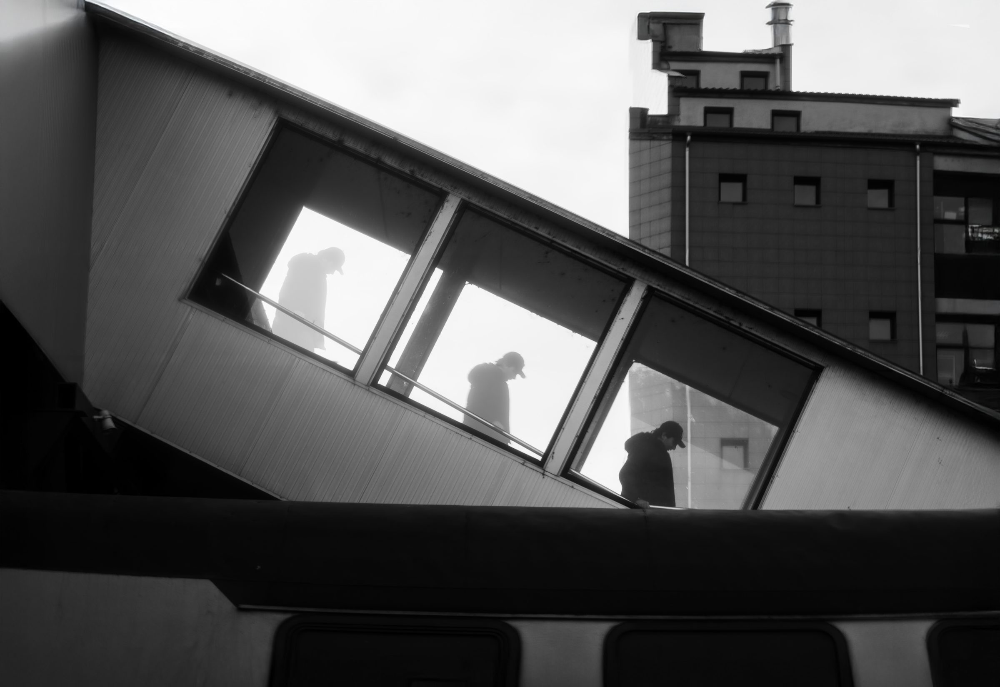
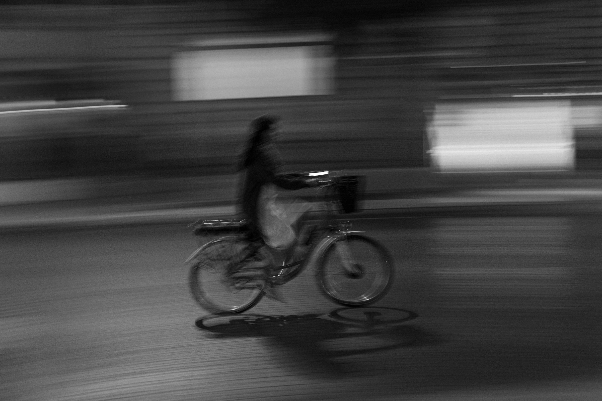
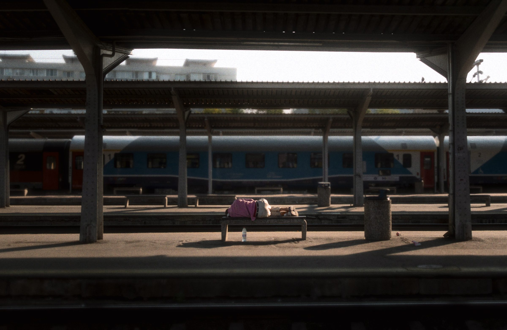
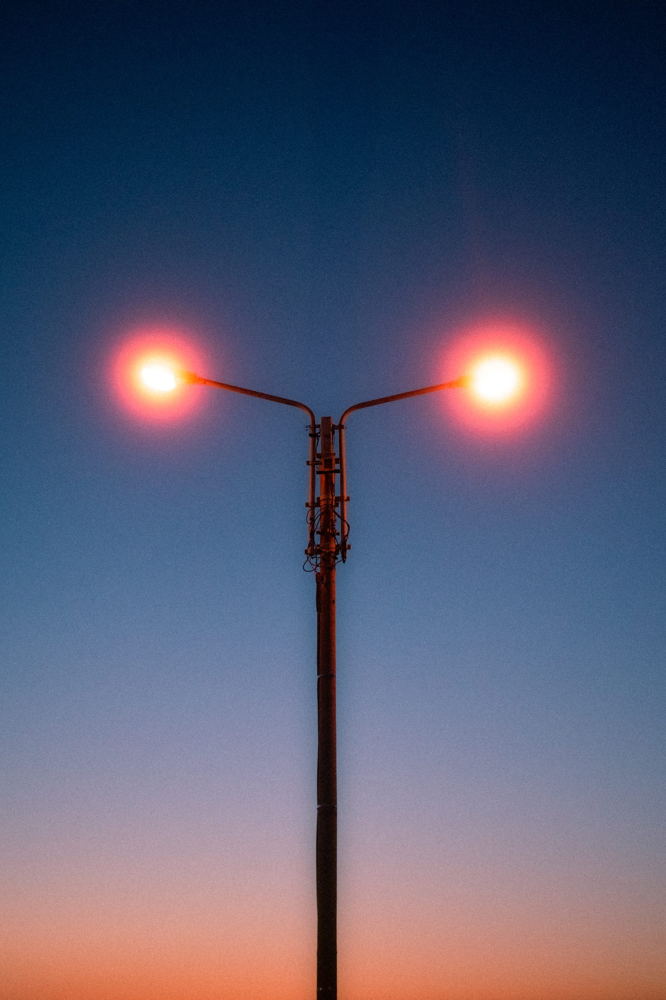
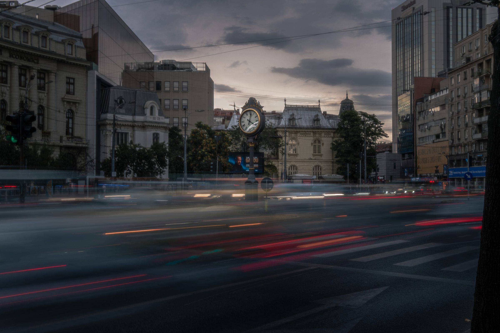

Loneliness
Black & white · Street
Bring a photograph home
Order a full-resolution digital file for $25 per photograph, or ask about a physical print. Choose an image below and email me; I’ll arrange payment and send the digital file by email.
Ask about a printA few to begin with

Black & white · Street

Black & white · Street

Travel · Quiet moments

Travel · Colour

Landscape · Evening

Street · Colour

Street · Long exposure
Interested in another image? Open it in the gallery and choose “Contact me” to include that photograph in your print enquiry.